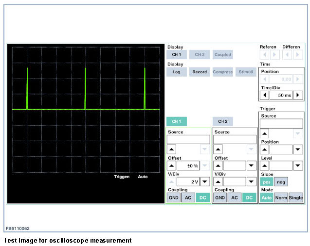

Seat Belt Systems: Description and Operation
Seat Belts
The seatbelt tensioners have the task of removing or reducing any belt slack in the pelvic and shoulder region. The seatbelt tensioner forms a unit with the seatbelt buckle. The belt buckle switch, a two-wire Hall switch, is monitored by the airbag control unit. In the event of a fault, a fault code memory entry is made in the airbag control unit.
Belt buckle switch
The belt buckle switches indicate whether the seat belts have been fastened or not. The belt buckle switches are supplied with clocked voltage by the airbag control unit. The following shows the voltage curve that is measured at the airbag control unit when the voltage curve is OK. For the voltage measurement, the adapter lead must not be connected to the seat belt buckle switch.

NOTE: Never perform any work on the airbag unless the vehicle battery has first been disconnected. Always ensure that the battery is disconnected before connecting or disconnecting the plugs for the airbag control unit, sensors or gas generators.The airbag control unit contains vehicle-specific data and must be encoded prior to operation.Removal and installation in other vehicles is strictly prohibited.